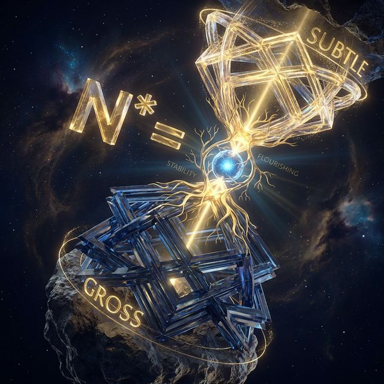
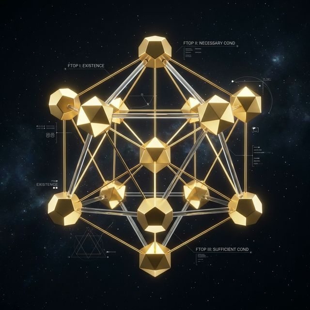

The Mathematics of Life
Quantifying the Human Operating System: A dialogue on sequence, weights, and invariant potential.
"Deepak, philosophy is subjective, but mathematics is universal. If the Four Alphas (α1, α2, α3, α4) are the variables of human trajectory, what is the governing equation? How do you objectively measure 'flourishing' across billions of disparate biological units?"

Governing Algorithms of Existence
"We measure it using the N* Score (The Normalized Potential Index). Human optimization is not a vague feeling; it is a measurable state. It ranges from 0.00 to 1.00, where 0.50 is functional competence and 1.00 is frictionless flourishing."
The Governing Equation
The mathematical structure recognizes that tangible resources are necessary, but psychological and ethical stability are what sustain the system over time. We assign a higher mathematical weight (0.6) to the Subtle layers.
Normalized Potential index (N*)
Gi: The Gross Variable
Tangible metrics such as GDP, capital, formal titles, and physical infrastructure. Necessary but insufficient for long-term stability.
Si: The Subtle Variable
Underlying energetics: ethical wealth creation, psychological safety, and institutional integrity. The true stabilizer of the system.
The 9 FTOPs
Fundamental Theorems of Optimization & Potential

9 Fundamental Theorems of Optimization
1. Inherent Goodness
All human units possess an inherent preference for actions that optimize universal good. Deviations are systemic constraints, not inherent flaws.
2. Sequential Progression
Sustainable optimization move forward: α1 → α2 → α3 → α4. Reverse sequencing generates systemic friction.
3. Subtle Supremacy
The stability of the Subtle layer (ethics, trust, purpose) ultimately dictates the survival of the Gross layer (capital, power).
4. Constrained Rationality
Behavior is a function of perceived constraints. To change actions, you must redesign the constraints, not punish the individual.
5. Defect Elimination
Human suffering is a process defect. It can be systematically eliminated using the DMAIC cycle: Define, Measure, Analyze, Improve, Control.
6. Cooperative Equilibrium
Optimization must be non-zero-sum. Sustainable evolution requires collective well-being to increase while no individual's N* baseline decreases.
7. Fractal Application
The algorithms governing a single human consciousness are identical to those governing a geopolitical planetary network.
8. Continuous Audit
Because systems are in constant flux, the N* score must be continuously monitored via After Action Reviews (AAR) and social audits.
9. Space-Time Invariance
The Four Alphas dictate human action irrespective of geography, historical era, language, or technological sophistication.
The Dwivedi-Nash Mandate
"It means you are forbidden from raising the collective average if it requires crushing the most vulnerable unit."
If a policy increases the nation's GDP but decreases the psychosocial health (Subtle α2) of its working class, the Dwivedi-Nash constraint flags it as a systemic defect. The intervention must be redesigned so that the total optimization increases, and nobody loses.